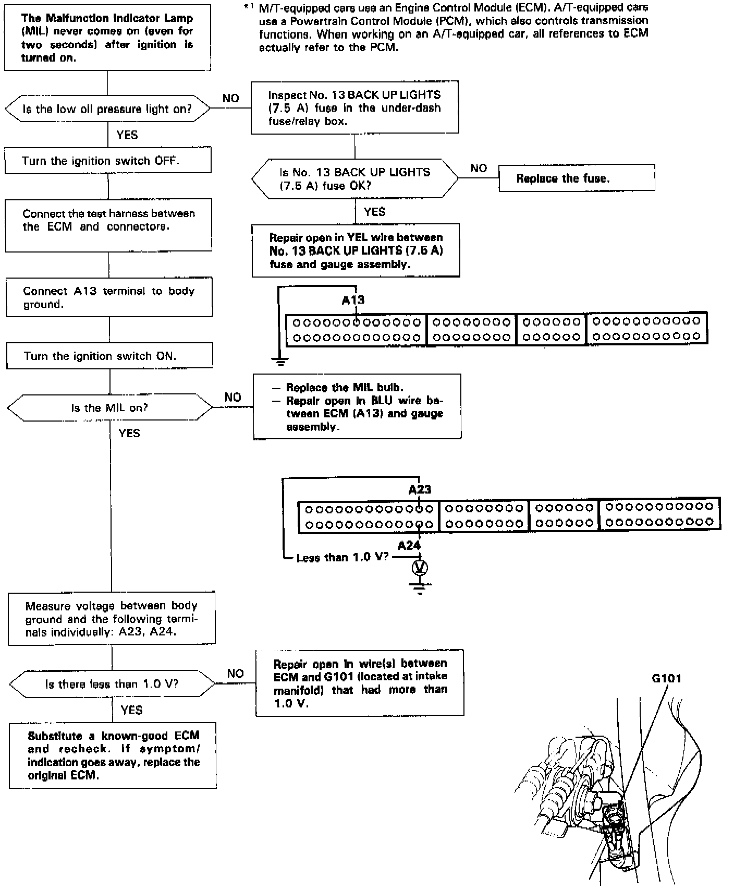

Operation CHARM
: Car repair manuals for everyone.
Home
>>
Acura
>>
1994
>>
Legend Sedan V6-3206cc 3.2L SOHC FI
>>
Repair and Diagnosis
>>
Powertrain Management
>>
Computers and Control Systems
>>
Testing and Inspection
>>
Symptom Related Diagnostic Procedures
>>
Malfunction Indicator Lamp
>>
Malfunction Indicator Light (MIL) Never Comes on
Malfunction Indicator Light (MIL) Never Comes on
MIL
NEVER COMES ON

NOTE:
-
When there is no code stored, the
MIL
will stay on if the
service check connector
is jumped.